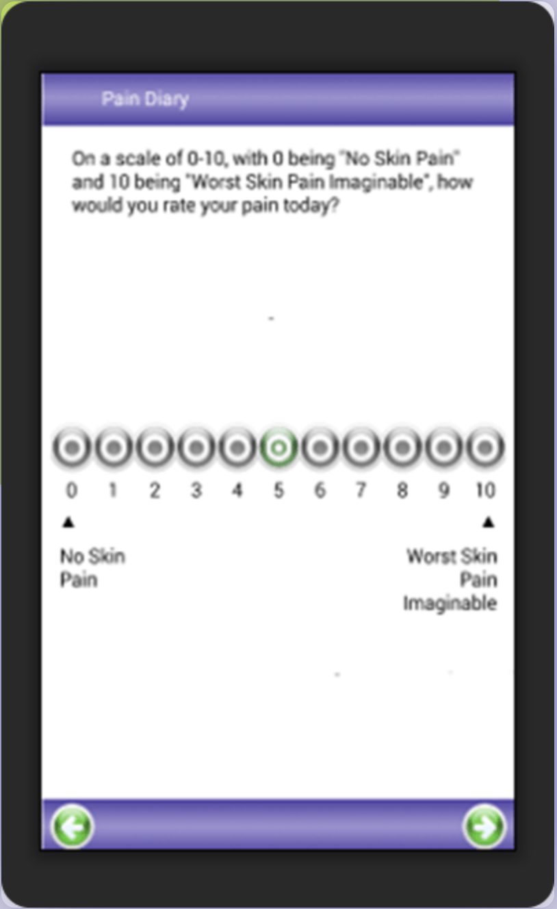
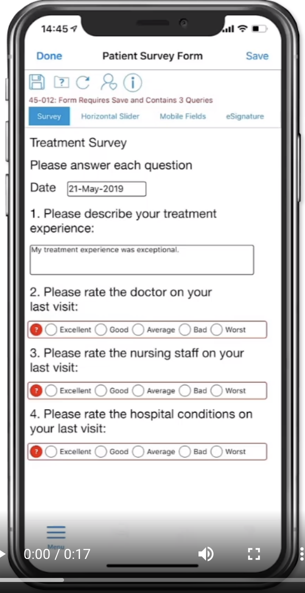
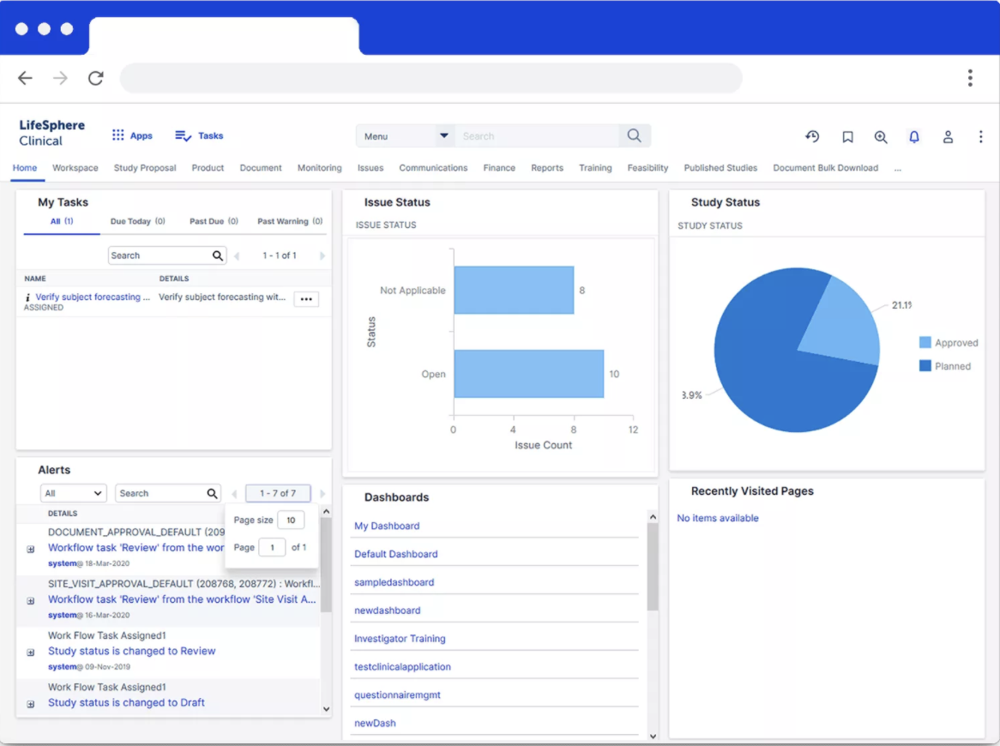
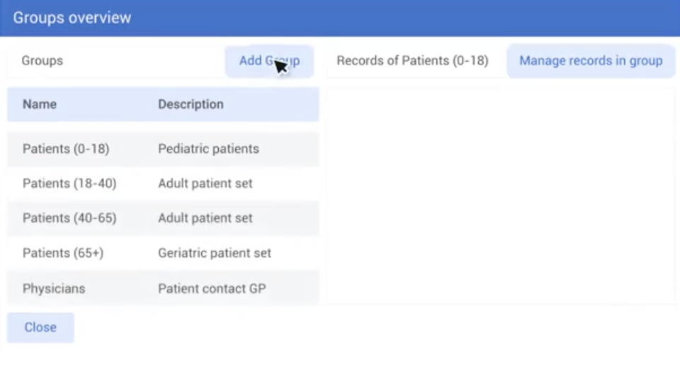

Related Projects Review
In a clinical setting, there exist numerous solutions to the Patient Reported Outcome Measure collection system, each with their own benefits and drawbacks. Click into each of the headings below to learn more about them:

Though creating and distributing a tablet is out of the scope of this project, particularly given that the vast majority of the population is in possession of a device which could be used to provide responses to PROMs, we can draw inspiration from the way that they have essentially designed away the need for source verification with their tablets, given that those without a tablet (who are not supposed to be responding to PROMs) cannot do so.

There is a lot for us to draw from this application: the use of a web application in particular is a very suitable choice given the problem setting, and the ability to send notifications to Respondents either automatically or manually in itself could later prove very useful as a measure to increase the proportion of Respondents responding to a questionnaire in a timely manner.
There are unique aspects in this project which we can also learn from: the importance of being able to ensure that data is not missing or invalid when submitted in response to a questionnaire is of paramount importance to the analysis of the data to be done by a Surveyor. Being able to validate these forms, and prevent them from being sent off if they are invalid is most certainly something that we will be conducting further research into throughout the duration of this project.

We belive eCOA and its' features bear the greatest resemblence to the solution which we will likely end up developing: it provides analysis tools for responses to the questionnaires that are submitted through there, and makes the process of visualising and hence understanding the factors that help and hinder an individuals adherence to a treatment plan dramatically simpler and shorter. Though the solution is significantly more specialised than is desired by our requirement of generalisation, ultimately the similarity between the two platforms leads us to believe that this is the solution from which we will draw the most inspiration from.
This solution also appears to be a solution favoured in practise by larger organisations too, with notable clients including Johnson & Johnson, AstraZeneca and Novartis using it [4].

This source in particular deserves special consideration in our research and review procedure due to its paradigm shift in the understanding of a response, and the information that a response contains. Their inclusion of the concept of progress implies a sentiment associated with the responses to questions on a questionnaire, such as a positive sentiment for questions which imply that a quantitative question with a higher value associated to it means more progress has been made, or that it is an arbitrarily better answer.
Given our requirements to produce a generalisable platform with clinical applications, this interpretation of sentiment is likely to be incredibly useful to us in future: for example, when a clinician might want to understand whether a patient's interpretation of their general wellbeing is improving over time or not. Furthermore, the multitude of response types may also be something to draw upon in the construction of a generalised platform and the addition of usability features such as bulk upload of new users would likely be a massive plus for the user experience, and hence something that we will consider.
Potential Solutions
Taking inspiration from the existing solutions above, we’ve identified a few key solutions to the problem that we could implement:
- A mobile application (iOS/Android)
- A web application
- A physical device containing custom software to respond to a PROMs with a corresponding control centre application
- A desktop application (macOS/Windows)
We unanimously decided to move forward with the web application due to the generality requirement that we have of this project. Different schools, clinics and members of the public are going to use different devices, so limiting ourselves to a specific desktop or mobile application is unsuitable for this project given that requirement.
Creating a custom device, as did assisTek for their solution [1] is also out of the scope of this module and project, and something that we believe to be unnecessary irrespectively.
By process of elimination, this leaves us with the web application, which does not constrain the range of devices that Surveyors or Respondents can use to submit and complete PROMs.
Potential Technologies
Programming Languages & Web Frameworks
Our solution could be developed using either client-side or server-side frameworks. Given that a large proportion of the functionality required in our requirements need database data coming from the server, we opted to narrow our initial search down only to server-side frameworks to prevent the need for browser-to-server round trips and thus reduce the load times for our users [6, 7].
Thus, with the help of some additional sources [8, 9, 10], we narrowed our search for server-side frameworks down to the following.
Ruby on Rails
Ruby on Rails (RoR) is a server-side web framework used by numerous global organisations including GitHub and AirBnB for their web apps. RoR has a vibrant web development community, and is known for its intuitive syntax designed to minimise the amount of code required of developers. As a result, development speed using RoR is very good.
RoR abides by several design principles including DRY (Don't Repeat Yourself) and MVC (Model View Controller), and has easy integration with existing frontend Frameworks such as React, Angular and Vue.js, making it a popular choice for many developers. Based on Ruby, it is also object-oriented and dynamically typed.
RoR's main documented disadvantage is its popularity (Ruby-based frameworks cannot be compared in popularity terms to Python-based frameworks like Django and Flask) and subsequently the time taken for new developers to get up to speed [11, 12]. Though RoR's code is simple, it is not initially easy to understand [12]. RoR is widely criticised for being slow, though inappropriately. The majority of the time this is due to developers not understand what is going on under the hood, and 'slow' programs often simply require memory optimisation to bring them up to speed [13]. For a project that has to be completed from scratch in under 6 months, taking the time out to learn Ruby and properly understand what's going on under the hood in addition to learning frontend frameworks and completing other project deliverables makes RoR a potential but likely suboptimal choice of framework.
Flask
In contrast to RoR, Flask is written in Python, a language with which all of the members of this team are familiar with. Flask is a simplistic micro-framework great for serving light applications and which is very beginner-friendly [14]. It uses a template engine, which allows you Python to inject variables into templates and contains inbuilt development servers, fast debuggers and restful request dispatching [14].
The disadvantage to the simplicity of Flask is its dependence on dependencies to implement anything other than basic functionalities. Increasing the number of dependencies associated with the project correspondingly increases the expected number of security vulnerabilities within the project, and is a significant disadvantage in production. Flask is also build with a modular design philosophy instead of following traditional design patterns such as Model View Controller (MVC) and has no inbuilt database interaction.[15].
Node.js
Node.js is a server-side JavaScript runtime engine based on Chrome's v8 JavaScript engine [16]. A Node.js backend offers a number of advantages to web developers. Among the most notable is the fact that it is based on JavaScript, meaning that developers using popular frontend frameworks such as React and Angular can continue development in the same language, significantly speeding the development process. Moreover, it's incredibly easy to build REST APIs and has a great package manager, npm. As a result, there are lots of frameworks and packages to choose and use from - the majority of which are incredibly well documented.
Node is also fast. Its asynchronous, single-threaded, non-blocking I/O enables it to always be ready to receive new requests while worker threads perform computation in the background, drastically increasing its performance [17].
In the context of our project, its disadvantage is our lack of experience using JavaScript, and its lack of a native Object Relational Mapper (ORM), which simplifies interactions with a database, and cuts the time required for testing and mocking databases.
Django
Django is a python-based web development framework optimised to allow developers to put out web applications as quickly as possible with a bunch of in-built functionality enhancing this: Django has it's own Object Relational Mapper (ORM) which translates models used in development to tables in the database by default. Moreover, it has a number of inbuilt security mechanisms including CRSF tokens to protect against Cross Request Site Forgery attacks, ensuring that developed applications have a baseline level of security which is higher than its conterparts using other frameworks [18].
Django also implements the Model View Template (MVT)/Model Template View design pattern, which decomposes the components and responsibilities of different parts of the web application and makes developing web apps using it very scalable. On a non-technical level, our client has a strong preference for our use of Django, which has influenced our decision making during this process.
On the frontend, Django has its own templating engine [19] which provides a convenient way to dynamically render HTML on the server-side and supports URL matching using regular expressions. Administratively, it is also supported by extensive documentation, and a strong community.
Databases
SQL vs NoSQL
There are two types of database we could use in Activity League.
SQL databases have predefined schema and are based on Structured Query Language (SQL) which is incredibly useful for performing long and complex queries through the database, whereas NoSQL databases do not and are document-based instead of relational. They do not impose restrictions on the contents of the documents within the database. Comparatively, this makes scaling NoSQL databases easier than scaling SQL databases, where changes to the schema of a database can prove costly and disruptive to the usage of an application [20].
In the event that a bigger database is eventually used for Activity League, this would also give the upper hand to the NoSQL database which can be scaled horizontally (i.e. by adding more servers) rather than vertically like the SQL databases (adding more storage, RAM, etc) [20].
However, in the context of Activity League, storing data in a relational database makes much more sense considering that a number of the functionalities implemented can be ultimately underpinned by complex, structured queries which are much better handled by SQL databases than NoSQL. For example, querying all of the users in a certain group of users who have completed a specific questionnaire.
Nonetheless, this is still eventually determined by the way that we choose to structure our data, and at this (research) stage, we could realistically do either.
Ultimate Design Decisions
Given our past project experience in Python, its ORM and handling of views and requests and our client’s preference, we opted to use Django. On the frontend, we decided to use Bootstrap given we were using Django’s HTML templates and didn’t need the more complex functionalities provided by frameworks like React.js.
Our eventual choice of database has been determined by our choice of web framework: Django does not officially support NoSQL databases [21] and integrations between Django and NoSQL database providers such as MongoDB are conducted using unofficial package djongo. Accordingly, we decided to use a PostgreSQL DBMS for our application due to its popularity and strong documentation within the Django community.
References
[1] Assistek. 2021. assisTek | Patient Management | TEK eDiary Features & Benefits. [online] Available at: https://www.assistek.com/tek-ediary/ [Accessed 3 January 2021].
[2] Crucial Data Solutions. 2021. ePRO/eCOA and eConsent | Crucial Data Solutions. [online] Available at: https://www.crucialdatasolutions.com/epro-ecoa-econsent/ [Accessed 2 December 2020].
[3] Signant Health. 2021. eCOA Clinical Trials Solution | Signant Health. [online] Available at: https://www.signanthealth.com/solutions/clinical-outcome-assessments/smartsignals-ecoa-ecoa/#epro-and-ediary [Accessed 2 January 2021].
[4] ArisGlobal. 2021. LifeSphere eCOA | ArisGlobal. [online] Available at: https://www.arisglobal.com/products/lifesphere-ecoa-agoutcomes/ [Accessed 21 March 2021].
[5] Castor EDC. 2021. Patient Reported Outcome (ePRO) Software | Castor. [online] Available at: https://www.castoredc.com/epro/ [Accessed 28 December 2020].
[6] Cloudflare. 2021. What do client side and server side mean? | Client side vs. server side. [online] Available at: https://www.cloudflare.com/en-gb/learning/serverless/glossary/client-side-vs-server-side/ [Accessed 3 November 2020].
[7] Toptal Engineering Blog. 2021. Client-side vs. Server-side vs. Pre-rendering for Web Apps. [online] Available at: https://www.toptal.com/front-end/client-side-vs-server-side-pre-rendering [Accessed 4 November 2020].
[8] KeyCDN, 2021. Top 8 Best Backend Frameworks. Available at: https://www.keycdn.com/blog/best-backend-frameworks [Accessed 4 November 2020].
[9] GeeksforGeeks. 2021. Top 10 Frameworks for Web Applications - GeeksforGeeks. [online] Available at: https://www.geeksforgeeks.org/top-10-frameworks-for-web-applications/ [Accessed 4 November 2020].
[10] Developer.mozilla.org. 2021. Server-side web frameworks - Learn web development | MDN. [online] Available at: https://developer.mozilla.org/en-US/docs/Learn/Server-side/First_steps/Web_frameworks [Accessed 4 November 2020].
[11] Watson, T., 2021. Django vs. Rails: Web Frameworks Performance and Popularity - Skywell Software. [online] Skywell Software. Available at: https://skywell.software/blog/django-vs-rails-web-frameworks-performance-and-popularity/ [Accessed 6 November 2020].
[12] Yung, Z., 2021. Python vs. Ruby vs. Node.js - Which Platform Is a Fit for Your Project?. [online] Blog by Railsware. Available at: https://railsware.com/blog/python-vs-ruby-vs-node-js-which-platform-is-a-fit-for-your-project/#Popularity [Accessed 6 March 2020].
[13] Kontny, N., 2021. Ruby On Rails Is Slow. [online] Rockstar Coders. Available at: https://www.rockstarcoders.com/ruby-on-rails-is-slow/ [Accessed 6 November 2020].
[14] DEV Community. 2021. Python Flask: pros and cons. [online] Available at: https://dev.to/detimo/python-flask-pros-and-cons-1mlo [Accessed 6 November 2020].
[15] Medium. 2020. Flask vs Django: How to Understand Whether You Need a Hammer or a Toolbox. [online] Available at: https://steelkiwi.medium.com/flask-vs-django-how-to-understand-whether-you-need-a-hammer-or-a-toolbox-39b8b3a2e4a5 [Accessed 6 November 2020].
[16] Node.js. 2020. Node.js. [online] Available at: https://nodejs.org/en/ [Accessed 6 November 2020].
[17] Rastogi, N., 2021. Why you should use Node.js over Django. [Blog] Gitconnected, Available at: https://levelup.gitconnected.com/why-you-should-use-node-js-over-django-f6870dd8dac0 [Accessed 6 November 2020].
[18] Djangoproject.com. 2020. The Web framework for perfectionists with deadlines | Django. [online] Available at: https://www.djangoproject.com/ [Accessed 6 November 2020].
[19] Docs.djangoproject.com. 2020. Templates | Django documentation | Django. [online] Available at: https://docs.djangoproject.com/en/3.1/topics/templates/ [Accessed 6 November 2020].
[20] GeeksforGeeks. 2020. Difference between SQL and NoSQL - GeeksforGeeks. [online] Available at: https://www.geeksforgeeks.org/difference-between-sql-and-nosql/ [Accessed 9 November 2020].
[21] Code.djangoproject.com. 2020. NoSqlSupport – Django. [online] Available at: https://code.djangoproject.com/wiki/NoSqlSupport [Accessed 9 November 2020].